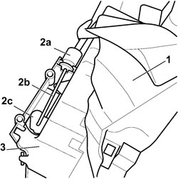

7010N20 REAR SIDE DOOR LOCK MOTOR/CATCH ASSEMBLY - R.R. WITH DOOR PANEL AND SUPPORT FRAME REMOVED
- Path
- Procedures > 70 FITTINGS > 7010 PASSENGER COMPARTMENT REAR SIDE DOORS > 7010N REAR SIDE DOOR CENTRAL LOCKING SYSTEM > 7010N20 REAR SIDE DOOR LOCK MOTOR/CATCH ASSEMBLY - R.R. WITH DOOR PANEL AND SUPPORT FRAME REMOVED
- Kind
- repair procedure (removal / refitting; the operation number is the code)
- Applies to
- all engines; all production periods
- Interactive page
- https://sloeber94.github.io/elrnDB-fCrm/en/#/194000935
Applies to: all engines; all production periods
 Removing
Removing
 Refitting
RefittingOp. 7010C12 REAR SIDE DOOR EXTERIOR HANDLE (ONE), LH OR RH - R&R WITH INTERIOR SUPPORT FRAME REMOVED
1. Lift up the rubber protection.
2. Release the end (2a) and disconnect the connecting rod (2b) from the lever (2c).
3. Keep the central locking motor/lock assembly.

Applies to: all engines; all production periods
Refitting
Removing- Lift up the rubber protection.
- Connect the connecting rod to the lever and secure the end to the central locking motor/lock assembly.
Op. 7010C12 REAR SIDE DOOR EXTERIOR HANDLE (ONE), LH OR RH - R&R WITH INTERIOR SUPPORT FRAME REMOVED